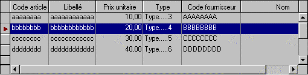

On appelle ligne courante, la ligne de tableau sur laquelle l'utilisateur s'est positionné. Pour la distinguer des autres lignes, deux attributs d'affichage particuliers lui sont affectés :
Une couleur de sélection (dépendant du thème de couleurs choisi).
ET / OU
Une image bitmap (une flèche vers la droite) affichée dans la colonne d'état correspondante.

Par appel à la procédure XmeListSetSelectionOption, vous pouvez choisir d'utiliser l'un, l'autre ou les deux attributs ("couleur seule" par défaut).